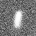
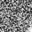
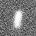

The Solar System seen from above, distances to scale. Dots are asteroids moving on their own orbits. Glowing dots are asteroids Rubin detected within two days of the shown date; the faint fan from Earth shows which way the telescope was pointing, brighter where it looked more often.
Each dot is an asteroid: its orbit size (semi-major axis a) against its eccentricity e, how stretched the orbit is. The strip on top counts asteroids per 0.025 AU. Dashed lines mark orbits whose period is a simple fraction of Jupiter's (4:1, 3:1, …); Jupiter's regular tugs clear those zones, so look for the dips.
Colour from two exposures in different filters taken minutes apart, so distance and lighting barely change. Gold line: the Sun's colour. Redder than the Sun in r − i hints at stony S-types; close to solar hints at dark carbon-rich C-types.
One bar per night of 2026 with data. Top: all alerts that night (log scale), and in blue those matched to known Solar System objects. Bottom: detections of the asteroids on this page. Empty stretches mean no data. Click a night to send the map there.
The three 36 × 36 pixel stamps (0.2″ per pixel, about 7″ across) that came with alert 171211557626183684: near-Earth asteroid 2020 HJ4, i band, 15 Nov 2026, 0.30 AU from Earth. Open any asteroid's card and press Show cutouts to load its latest stamps here.



The template holds only noise at this spot: the asteroid was elsewhere when the template visits were taken. Subtracting it leaves the asteroid alone. It is an elongated streak rather than a round star because it moved about 3″ during the 30-second exposure, which is the signature of a nearby, fast-moving object. The alert pipeline then matches the source to a predicted position of a known object and attaches its heliocentric position and velocity, which is what every orbit on this page is built from.